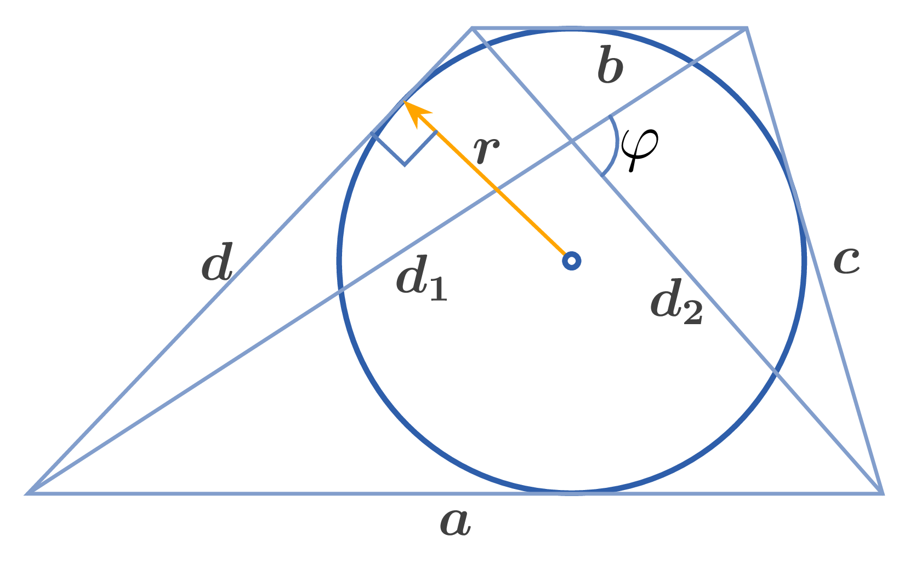

Bases of a trapezoid: $a, b$,
Lateral sides: $c, d$,
Midline: $q$,
Altitude: $h$,
Diagonals: $d_{1}, d_{2}$,
Angle between the diagonals: $\phi$,
Radius of inscribed circle: $r$,
Radius of circumscribed circle: $R$,
Perimeter: $L$,
Area: $S$
1. Relationship between bases and lateral sides in a tangential trapezoid: $$a + b = c + d$$
2. Midline of a tangential trapezoid: $$q = \dfrac{a + b}{2} = \dfrac{c + d}{2}$$
3. Perimeter of a tangential trapezoid: $$L = 2(a + b) = 2(c + d)$$
4. Area of a tangential trapezoid: $$\begin{aligned} S &= \dfrac{a + b}{2} \cdot h = \dfrac{c + d}{2} \cdot h = qh \\ S &= \dfrac{1}{2} d_{1} d_{2} \sin \phi \end{aligned}$$